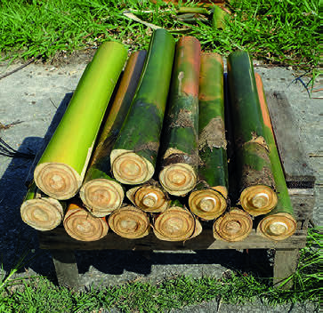
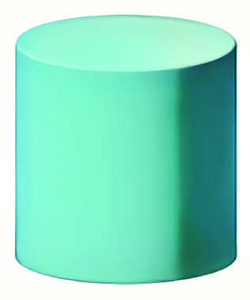
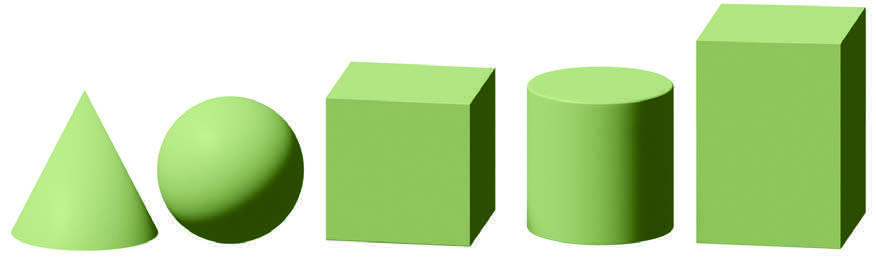
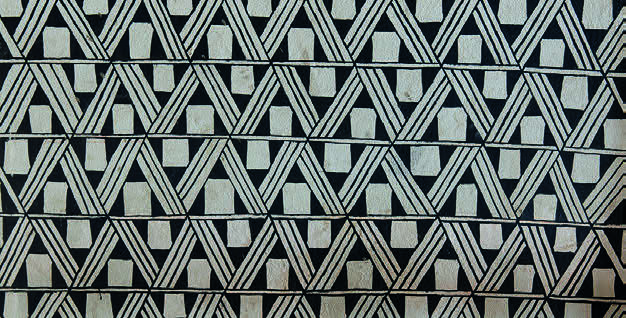

GLOSSÁRIO
GRAFISMO INDÍGENA:
ARTE VISUAL QUE, ALÉM DE CONTRIBUIR PARA A BELEZA, IDENTIFICA UMA ETNIA E EXPRESSA SIGNIFICADOS RELIGIOSOS E SOCIAIS.
NESSE INSTRUMENTO E NO CONTEXTO EM QUE ELE É USADO, É POSSÍVEL IDENTIFICAR ALGUMAS CARACTERÍSTICAS GEOMÉTRICAS, COMO O SEU FORMATO E O GRAFISMO INDÍGENA PRESENTE NAS PINTURAS.
OBSERVE AS IMAGENS A SEGUIR, QUE MOSTRAM OBJETOS COM FORMATO PARECIDO COM O DA FLAUTA URUÁ.


REPRESENTAÇÃO ESQUEMÁTICA DE UM CILINDRO.
IMAGEM SEM ESCALA; CORES-FANTASIA.
CILINDRO
SOUD
QUAIS CARACTERÍSTICAS DESSES OBJETOS SÃO PARECIDAS COM AS DO CILINDRO?
Eles têm formato arredondado e duas bases circulares.
CILINDROS SÃO FORMAS GEOMÉTRICAS ESPACIAIS.
OBSERVE MAIS ALGUMAS REPRESENTAÇÕES DESSAS FORMAS.

REPRESENTAÇÃO ESQUEMÁTICA DE SÓLIDOS GEOMÉTRICOS ESPACIAIS: CONE, ESFERA, CUBO, CILINDRO E BLOCO RETANGULAR.
VALÉRIA REZENDE
NOS GRAFISMOS, PODEMOS VER FIGURAS PLANAS, COMO QUADRADOS, TRIÂNGULOS, CÍRCULOS E RETÂNGULOS.
QUAIS FORMAS GEOMÉTRICAS PLANAS VOCÊ IDENTIFICA NESTE GRAFISMO?
Retângulos e triângulos.

FORMAS GEOMÉTRICAS PLANAS PRESENTES EM PINTURA KAMAYURÁ.
RENATO SOARES/PULSAR IMAGENS
Amplie a atividade perguntando quais outras formas tridimensionais eles conhecem e mostre a diferença entre elas e as figuras planas; nesse momento, o objetivo é diferenciar esses dois conjuntos de figuras geométricas.
É comum surgirem falhas ao identificá-las e ouvirmos os estudantes nomeando um cubo como um “quadrado”, por exemplo.
Nesse caso, pode-se auxiliá-los a observar as propriedades das figuras geométricas para que percebam que o cubo é tridimensional e o quadrado, bidimensional.